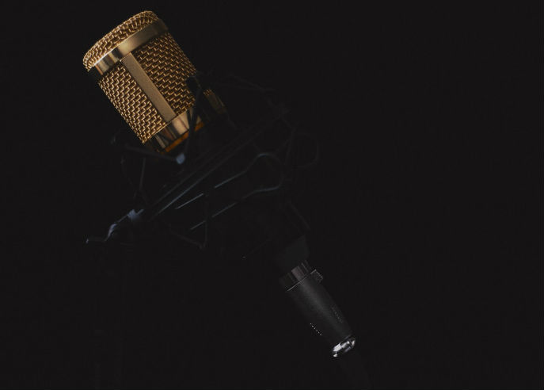

Streams
| Streams Sep 17 | Streams Sep 18 | Streams Sep 19 | |
|---|---|---|---|
| Dormiglioni | 4 | 18 | 4 |
| Dorms | 42 | 45 | 38 |
Before you get to ultilize Spotify for artists though, you need a distributor. If you are signed to a record, they most likely do the heavy lifting. If you are an independent artist, there are several different services you can use such as CD Baby, Distrokid, etc. They are relatively inexpensive services that distribute your music to various listening platforms. They basically function as the liason between your original content and websites like Youtube, Pandora, Apple Music, Spotify, and more. Depending on the service's terms, you can get paid for your success and rising numbers (in terms of listeners and plays).
Once you have your music up and running on Spotify, you are going to want to reach out to people. Specifically, people who write blogs and talk about all kinds of music. This is a hard road to navigate and requires certain tactics. It is worth it though, because the right person can boost your audience substantially. You can either pay for an additional promotion service, or take matters into your own hands. Appealing to writers is a challenge in itself, especially with the plethora of artists already pitching their music. So, it's important to be cautious in your approach and tacits.
There is no set formula to becoming a successful artist on Spotify. Rather, it is trial and error. It is a combination of making yourself stand out, creating quality content, and getting it out to consumers. There is a reason they say you do not become famous overnight. Creating music for Spotify is hard work and requires more effort than one may think at first glance. Most importantly, effort always triumphs talent. Stay persistent & stick to your passions.

About the Author
Stephanie Gonzalez is a Communications major interested in music management and creation.
Images courtesy of Wikipedia and Apple
Color Palette
- "Spotify for Artists"
- "Distrokid"
- “Five Steps To Becoming a Successful Artist on Spotify.”
- "Top 23 Spotify Quotes: A-Z Quotes"
- "Goodreads"
Copyright, 2019, Stephanie Gonzalez
Stephanie Gonzalez

This work is licensed under a Creative Commons Attribution-NoDerivatives 4.0 International License.